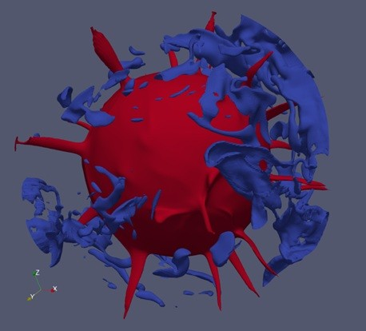
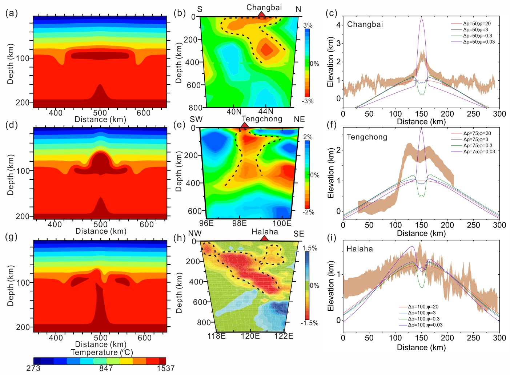
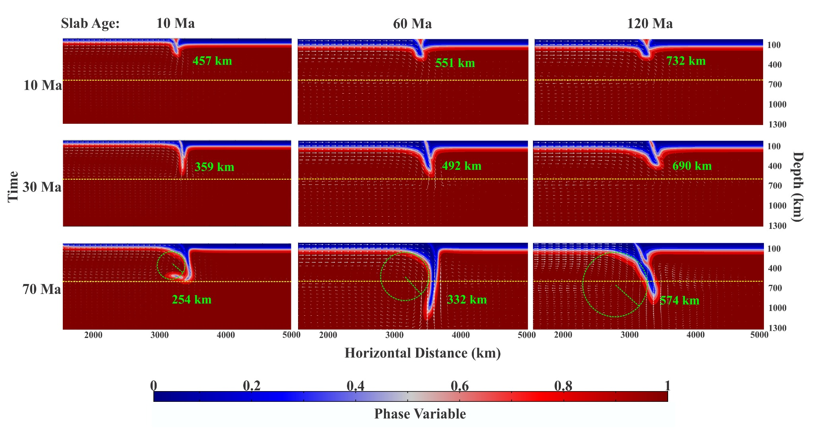

SPIDER
Slab–plume interaction in the deep Earth
Current and previous areas of scientific investigation.

Slab–plume interaction in the deep Earth

Lithospheric weakening and dynamic topography

Slab bending, trench motion, and tectonic deformation